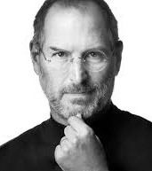

Steve Jobs
1955-2011
From garage to world's most valuable company
Steven Paul Jobs (February 24, 1955 - October 5, 2011) was an American business magnate,
industrial designer,
investor, and media proprietor. He was the chairman, chief executive officer (CEO), and co-founder of Apple Inc.

"Have the courage to follow your heart and intuition. They somehow know what you truly want to
become."
-STEVE
JOBS
Timeline
- 24 Feb 1955 - Steven Paul was born in San Francisco, the son of Abdulfattah Jandali and Joanne
Schieblel. He is quickly adopted by Paul and Clara Jobs
- 1969 - Steve Jobs meets Steve Wozniak, 5 years older, through a mutual friend. Woz and Steve
share a love of electronics, Dob Dylan, and pranks
- Mar 1976 - Woz and Steve show the early Apple I board at the Homebrew Computer Club
- 28 Aug 1976 - Steve Jobs and Woz show off the Apple I at the Personal Computing Festival in
Atlantic City, with help from Dan Kottke
- 1978 - At Apple, work starts on the Apple III and the Lisa, while Jef Raskin begins The
Book of Macintosh
- May 1980 - Apple launches the Apple III, which will prove a disastrous flop
- Jan 1983 - Launch of the Lisa computer. The Lisa team later merges with the Mac team under
Steve Jobs for several months
- 8 Apr 1983 - PepsiCo CEO John Sculley becomes Apple and starts NeXT with five other refugees
from Apple. Apple announces it will sue NeXT
- 17 Sep 1985 - Steve Jobs resigns from Apple and starts NeXT with five other refugees from
Apple. Apple announces it will sue NeXT
- Dec 1996 - Apple, which was desperately looking for a modern operating system to buy,
eventually buys NeXT for $400 million. Steve Jobs is named "informal adviser" to Apple CEO Gil Amelio
- 6 May 1998 - Steve Jobs introduces Apple's revolutionary iMAC at the Flint Center auditorium in
Cupertino, 14 years after he had introduced the Macintosh at the same place
- 5 Oct 1999 - Introduction of the iMac DVs and of iMovie, the first of Apple's first Digital
Hub app
- 28 Apr 2003 - Apple opens the revolutionary online iTunes Music Store in the US, after
negotiating landmark deals with all major music labels
- 15 Jan 2008 - At Macworld 2008, Steve Jobs introduces MacBook Air, with the tagline "the
world's thinnest notebook". Three years later, it will come to redefine all of Apple's notebook product line
- 24 Aug 2011 - Steve Jobs resigns as CEO of Apple, with the words "I have always said if
there ever came a day when I could no longer meet my duties and expectations as Apple's CEO, I would be the
first to let you know. Unfortunately, that day has come." Tim Cook becomes Apple CEO
- 5 Oct 2011 - Steve Jobs dies at home, surrounded by his family